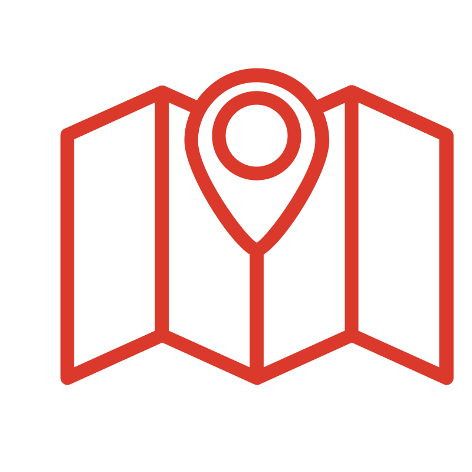

Números de impacto do projeto
Paraciclos instalados

0
Instraestrutura cicloviária
O MambuBike é um projeto de mobilidade urbana que envolve a estruturação do sistema cicloviário no bairro Parque Mambucaba, em Angra dos Reis (RJ). Sua fase piloto foi desenvolvida ao longo de 2023, em uma parceria entre poder público, terceiro setor e com ações de participação da sociedade civil.
O MambuBike é uma ação integrada, desenvolvida pela Prefeitura de Angra dos Reis, por meio da Secretaria Executiva de Ordem Pública e Mobilidade Urbana e da Secretaria de Desenvolvimento Regional, com assistência técnica da Iniciativa Mobilidade em Transformação. A Iniciativa é composta pelas organizações Cidade Ativa e Fundação Grupo Volkswagen, e contou com parcerias especializadas em diversas etapas de implementação do MambuBike.
O bairro Parque Mambucaba conta com um número expressivo de ciclistas que utilizam a bicicleta como principal meio de circulação no seu cotidiano. O objetivo central do projeto é oferecer infraestrutura adequada para o deslocamento dos ciclistas, proporcionando segurança e conforto para todos os usuários, além de melhorar a integração com o transporte coletivo. Junto ao desenvolvimento do projeto urbano, diversas ações de engajamento foram programadas, visando ouvir a opinião das pessoas mais impactadas e exercitar a cidadania.
Paraciclos instalados
Instraestrutura cicloviária